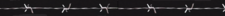

De: La Frikipedia, la enciclopedia extremadamente seria.
De: La Frikipedia, la enciclopedia extremadamente seria. De: La Frikipedia, la enciclopedia extremadamente seria.
| De la serie conflictos armados: | ||||
| Ragnarök | ||||
| ||||
| Lugar y fecha | Escandinavia, exactamente en el apocalipsis | |||
|---|---|---|---|---|
| Bandos | Buenos | Malos | ||
| Fuerzas | Æsir | Gigantes | ||
| Comandantes | Odín Thor Santa Claus |
Loki | ||
| Armas | El Banhammer Hachas Las valkirias |
Piedras Mazos Cualquier cosa que un gigante pueda usar como arma | ||
| Bajas | muertos: Toda la humanidad y los dioses heridos: 0 prisioneros: 0 |
muertos: 100000 gigantes heridos: 1 (Loki) prisioneros: 0 | ||
| Resultado | Todo se fue la la mierda | |||
«Ragnarok» redirige aquí. Para otras acepciones, véase Ragnarok (desambiguación).
Del nórdico antiguo, Ragnarök, de otros idiomas igual de raros, Ragnarøk, en la mitología nórdica, es el encuentro final entre los dioses nórdicos (Odín, Thor, El Pato Donald, etcétera), y los gigantes, estando Loki de su lado, puto traidor. También es conocido como la guerra fría, donde los bandos de los dioses capitalistas y los gigantes comunistas se enfrentaron.
Pero, ¿quién era quién?, aquí una lista de los combatientes:
Loki: El clásico dios malo, además de hijoputa por las numerosas bromas que les hizo a los demás Æsir (si no sabeís que es esto, se joden), hasta matar a uno de ellos.
Thor: El dios más pesoca de entre todos los Æsir, en sus ratos libres se dedica a competir contra los gigantes, con lo que aseguraba beber y beber hidromiel y romperle el brazo a algunos de ellos una sana competencia de fuerza. Solía ser amigo de Loki, hasta que este se volvio gay en contra de los dioses. Su arma para el combate es el Banhammer.
Odín: El Zeus de los nórdicos, y el más cabrón de los dioses. El ojo tuerto se debe a que el muy gilipollas se tropezó y se sacó un ojo con su lanza lo ofreció a cambio del conocimiento absoluto. Sus 2 cuervos mascota le sirven como lazarillos.
Gigantes: Seres de gran tamaño que generalmente bajaban de las montañas a joder a los humanos que se cruzaban en su camino. Hacían competencias con Thor.
Los gigantes comunistas no aceptaban el capitalismo de los dioses de Asgard, con lo que sobornaron persuadieron a Loki de unírseles. El acepta, y encabeza una revolución comunista en la URSS, pero antes de eso le jugó una mala broma a los dioses, donde acabó matando a uno de ellos y lo encarcelaron.
Loki tendría 3 hijos con una gigante (joder, como le hizo, ni Odín sabe): Jormundgander, una anguila más grande que la polla de cualquier actor porno, Fenrir, un lobo superdesarrollado y Hel, una diosa cadáver.
Ya con la llegada del invierno a Asgard, a Skadi se le olvidó ponerse un abrigo, como consecuencia estornudó y en la tierra se desató el Fimbulvetr, matando así a toda la humanidad.
Loki se libra de sus cadenas al más puro estilo de Saw, cortándose la pierna.
Odín intenta matar a Fenrir, pero al estar tuerto, no percibe bien la profundidad, con lo que no le da con su lanza y el Lobo termina comiéndoselo. Thor mata a la anguila de Jormundgander y hace unas cuantas brochetas con ella, pero la anguila era venenosa, cosa que no sabía Thor, por lo que muere intoxicado. Tyr mata algunos gigantes, pero igual se muere. Surt, el gigante pirómano termino incendiando la Tierra. El pato Donald se aprovecha de la situación y organiza un levantamiento comunista en Taiwan, donde consigue ser gobernante.
| | |
|---|---|
|
 Antigüedad
Edad Media
Edad Moderna
Siglos XX y XXI
Guerras inclasificables
|
Autor(es):